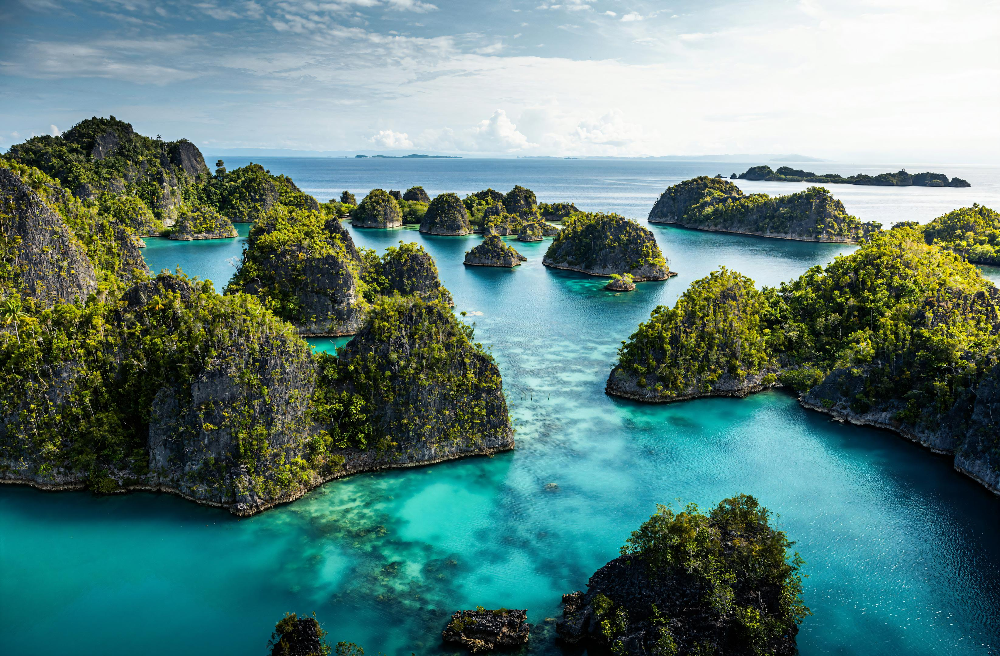

Southwest Papua, Indonesia
Raja AmpatThe Last Paradise
Di ujung timur Nusantara, laut tidak pernah tidur. Karst, hutan, terumbu dan komunitas pesisir membentuk satu kepulauan yang hidup.
The Archipelago
Sebuah kepulauan yang lebih terasa daripada dijelaskan.
Raja Ampat berada di Southwest Papua, Indonesia. Di sini, perjalanan bergerak dari teluk sunyi ke lorong karst, dari desa pesisir ke dunia bawah laut yang sangat beragam.
Read the field guide
Destinations
Delapan nama. Satu laut yang terus berubah.

“The landscape arrives in layers: sea, limestone, forest, horizon.”
Coral Triangle
Sebuah perpustakaan hidup di bawah permukaan.
Indonesia Travel mencatat sekitar 540 jenis karang dan sekitar 1.320 spesies ikan di Raja Ampat. Sumber yang sama mengutip The Nature Conservancy dan Conservation International untuk angka sekitar 75% spesies karang dunia.
Source: Indonesia Travel, Raja Ampat destination profile. Figures shown as reported by the source.
of the world's coral species, as cited by Indonesia Travel.
Culture
Laut juga punya waktu untuk beristirahat.
Sasi adalah praktik adat yang dapat membatasi pengambilan sumber daya laut pada waktu atau wilayah tertentu. Di Raja Ampat, ia membantu membuka cara pandang bahwa menjaga laut dapat menjadi bagian dari kehidupan komunitas.
Read about SasiThe film
Listen to the islands.
Gallery
Tujuh fragmen perjalanan.